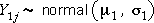
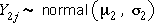
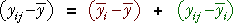
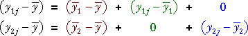
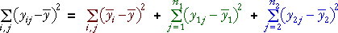
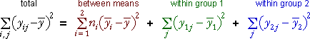
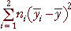
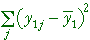
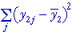

Model
As an initial example, consider the normal model for data from two groups,
group 1: 
group 2: 
These can be written together as

where Yij is the j'th of the ni values from group i.
Components
The difference between a value and the overall mean,  ,
can be written as the sum of two components,
,
can be written as the sum of two components,

It is useful to further split the second component into two separate components, depending on its group,

The green components are the difference between the values and their group mean for values in group 1, but are zero for values in group 2. The blue components have a similar definition for group 2.
Sums of squares
The sums of squares of these three components satisfy a similar equality,

Since the first component on the right is the same for all ni values in group i, the equation can be simplified as,

Egg shell density
In a randomised experiment, 12 hens were given a diet supplemented with leaves of a plant containing vitamin D and a different control group of 12 hens was given a normal diet. After two weeks, the shell density of the egs produced by each hen was recorded.
The jittered dot plot on the left shows the data.
Use the pop-up menu to draw the different components on the dot plot. (The dot plot on the right shows the distribution of the individual components.)
Interpretation
The three component sums of squares hold information about different aspects of the model.
| Source of variation | Sum of sqrs | Affected by: | Holds information about parameters: |
|---|---|---|---|
| Between means |  | Depends only on the group means, not the variation within the groups | µ2 − µ1 |
| Within group 1 |  | Depends only on the spread of value in group 1 | σ1 |
| Within group 2 |  | Depends only on the spread of value in group 1 | σ2 |
Demonstration
The diagram below shows a data set of 15 values from each of two groups. The sliders under the diagram can be used to adjust the sample means and standard deviations of the two groups — i.e. they shift and scale the data.
The three component sums of squares therefore reflect characteristics of the model that are easily interpreted.